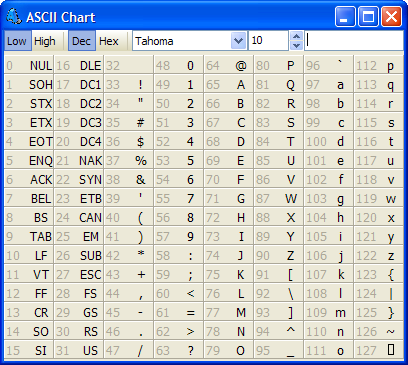

ASCII Chart |
|
The ASCII Chart expert shows ASCII values for all of the characters in a given font. You can set various options by right clicking on the grid. You can choose to view the high or low half of the ASCII character range (0-127, 128-55) and choose between HEX and decimal number representations for a character using the buttons at the top of the window. You can also choose the display font and size for the ASCII chart. Several other options are available in the context menu for the ASCII chart.
Clicking a character in the ASCII character grid will copy that character to the edit box at the top right of the window. From there, you can copy any characters to the clipboard for use in your program. 
|